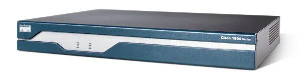

Aprenda Redes
Tudo sobre Redes Parte 12
Equipamentos de Rede - Introdução e Principais Tipos
Como sabemos, numa rede temos vários tipos de equipamentos além dos computadores, então vamos ver uma breve introdução de alguns dos principais equipamentos.
NIC (Placa de Rede)
A placa de rede opera nos níveis 1 e 2 do OSI. Suas funções são:
- Interligar o equipamento com a rede (cabeada/wireless).
- Converter sinais elétricos em pacotes de dados.
- Determinar se os pacotes são destinados ao computador.
- Converter dados em sinais elétricos para transmissão pela rede.
Switch (Comutador)
Um switch é um equipamento de rede que permite interconectar dispositivos em uma redede computadores usando comutação de pacotes para receber, processar e encaminhar quadros ao dispositivo de destino. Sobre ele:
- O switch é um equipamento concentrador, que encaminha os pacotes para o dispositivo ou grupo de dispositivos de destino, em vez de encaminhar os pacotes para todos os nós da rede, como ocorrem com os hubs.
- Aprende os endereços físicos dos nós e os associa às suas portas para uso posterior.
- Encaminha os quadros para seus destinos usando técnicas como Store and Forward, Cut-through, Fragment Free e Adaptive Switching.
O switch, em uma rede com topologia estrela, é o dispositivo central, de onde sai todos as conexões para os computadores.
Roteador
Equipamento que efetua o encaminhamento de pacotes entre redes de computadores distintas. Os pacotes de dados são encaminhados de um roteador ao outro até atingir o dispositivo de destino, ou sejam, descartados. Os roteadores efetuam a leitura dos pacotes IP, podendo analisar o conteúdo de seus cabeçalhos, e então tomar decisões baseando-se nos dados lidos.
Roteador de Banda Larga
Comum em ambientes domésticos, compartilha sua conexão com a internet a todos os dispositivos conectados a ele. Quase todos os roteadores banda larga possuem um switch integrado (geralmente de 4 portas), permitindo conectar os computadores da sua rede diretamente ao roteador sem a necessidade de qualquer periférico extra. A maioria também possui um access point integrado.
Access Point (AP)
Access point (ponto de acesso) é um dispositivo utilizado em redes sem fio locais (WLANs), que age como um equipamento transmissor e receptor de sinais de rádio, operando como uma espécie de switch sem fio. O AP se conecta a uma rede cabeada, fornecendo as estações conectadas acesso à infra de rede do local, e à internet.
Modulador/Demodulador (Modem)
Equipamento que converte um sinal modulado de um padrão específico para outro padrão, para que possam ser transmitidos por um meio específico. Por exemplo, transformar dados digitais em sinais elétricos para transmissão de dados via banda larga.
Repetidor
Dispositivo de rede usado para regenerar ou replicar um sinal enfraquecido. São empregados para reforçar sinais distorcidos por perdas na transmissão. Um repetidor digital é capaz de reconstruir um sinal e retransmiti-lo, permitindo estender a área de alcance da rede. Opera na camada física da rede.
Firewall
Sistema de hardware ou software cuja função é proteger uma rede de ameaças provenientes de outra rede, como a internet, e de outros hosts na própria rede. Controla o tráfego de dados entre as redes de acordo com as regras pré-estabelecidas (as políticas de segurança). Apenas o tráfego autorizado poderá atravessar o firewall.
Servidores
Computadores especiais que fornecem serviços e dados aos usuários de uma rede, incluindo aos computadores clientes. Existem inúmeros tipos de servidores, tais como:
- Servidores de arquivo e impressão.
- Servidor de banco de dados.
- Servidores DHCP e DNS.
- Servidor de aplicações.
- Servidor web/FTP.
- Servidor de domínio.
Balanceador de Carga
Um load balancer redireciona requisições de clientes de rede para servidores, de modo a maximizar a velocidade e capacidade de uso da rede. Suas principais funções são:
- Distribuir requisições de clientes ou a carga de rede de forma eficiente entre diversos servidores.
- Assegurar alta disponibilidade e confiabilidade, evitando congestionamento de serviços.
- Fornecer flexibilidade para expansão ou manutenção dos servidores.
Network Attached Storage (NAS)
Um NAS é um dispositivo de armazenamento de dados conectado a uma rede local, que permite o acesso a esses dados pelos usuários. É uma solução de baixo custo para armazenamento e compartilhamento de arquivos em redes locais, operando como uma espécie de "nuvem" pública, porém local.
Racks
Chassis de metal (armação) usadas para armazenar equipamentos de rede conectados. Muito comum em data centes, pode ser encontrado em diversos tamanhos, sempre medido em uma unidade chamada "U", que corresponde a uma altura de 1,75 polegadas (44,45MM), assim indicando o número de equipamentos que podem ser instalados no rack. A largura de um rack é padronizada em 19 polegadas (48,26CM).
Patch Panel
Hardware de conexão empregado em racks para realizar a conexão entre o cabeamento secundário de uma rede e os switches da rede local. Trata-se de um painel de conectores RJ-45 fêmea afixado em um rack. Da parte traseira do patch panel partem cabos que se conectam aos diverso equipamentos da rede. Cada conector do patch panel é chamado de porta.
Meios de Transmissão
Meio físico para a propagação de sinais de telecomunicações. Caminho físico por onde trafegam informações, entre um transmissor e um receptor. Os meios de transmissão podem ser classificados em vários tipos, dependendo da natureza do meio físico empregado. Os meios de transmissão mais usados são os guiados (coaxial, par trançado, fibra óptica) e os não-guiados (rádio, IR e microondas).
As melhores marcas de equipamentos são: Cisco, Hewlett Packard (HP), MikroTik, Ubiquiti, Aruba, Linksys, D-Link, Netgear, Intelbras e TP-Link.
Veja as imagens de alguns desses equipamentos:

Qual a Diferença Entre Switch e Roteador
Um switch é um equipamento de rede que permite interconectar dispositivos em uma rede de computadores, usando comutação de pacotes para receber, processar e encaminhas quadros ao dispositivo de destino. Possui múltiplas portas para a conexão de dispositivos ethernet em uma rede local.
O switch funciona assim:
- O switch é um equipamento concentrador, que encaminha os pacotes para o dispositivo ou grupo de dispositivos de destino, em vez de simplesmente encaminhar os pacotes para todos os nós da rede, como ocorria com os hubs.
- Armazena endereços MAC dos dispositivos em uma tabela de comutação, associando-os à porta onde estão conectados. Assim é possível encaminhar os dados diretamente do transmissor ao receptor.
- Encaminha os quadros para seus destinos usando técnicas como Store and Forward, Cut-Through, Fragment Free e Adaptive Switching.
Numa rede com topologia estrela, o switch estaria no centro dela.
O roteador é o equipamento que efetua o encaminhamento de pacotes entre redes de computadores distintas, baseado em endereços IP. Os roteadores efetual a leitura dos pacotes IP, podendo analisar o conteúdo de seus cabeçalhos, e então tomar decisões baseando-se nos dados lidos. Os pacotes podem ser então encaminhados de um roteador a outro até atingir o dispositivo de destino, ou serem descartados.
Essas são outras funções que um roteador faz:
- Realizar NAT (Network Address Translation), para acesso à internet às estações na rede local.
- Atribuir endereços IP a dispositivos via DHCP (Gateway Padrão).
- Auxiliar na segurança da rede por meio de filtragem de pacotes.
Um switch tem muitas portas, enquanto um roteador tem poucas portas, geralmente 4.
Temos também o roteador de banda larga, comum em ambientes domésticos, compartilha sua conexão com a internet a todos os dispositivos conectados. Quase todos os roteadores possuem um switch integrado (geralmente de 4 portas), permitindo conectar os computadores da sua rede diretamente ao roteador sem a necessidade de qualquer periférico extra. Muitos também possuem Access Point integrado.
Numa rede, os dispositivos são disponibilizados, a partir da internet pública, são o modem, roteador e switch, nessa ordem, que liga os computadores.
| Característica | Switch | Roteador |
|---|---|---|
| Camada de Rede | 2 ou 3 | 3 |
| Escopo de Rede | LAN | LAN/MAN/WAN |
| Função | Conecta dispostivos em uma LAN, gerencia VLANs | Comuta redes distintas, ou LAN e modem |
| Formatos de dados transmitidos | Quadro (L2) ou Pacote (L3) | Pacote | Endereço de Rede | MAC Address | Endereço IP |
| Número de Portas | Pode ser grande: De 4 a 48 ou mais, em modelos enterprise | Pequeno: 2, 4 ou 8, geralmente |
| Faz NAT? | Não | Sim |
Resumindo, um switch só se conecta numa mesma rede, o roteador só se conecta com redes diferentes.
Veja a imagem de um switch:

E a de um roteador:
O que é um Modem e Diferença para um Roteador
Modem é um dispositivo que codifica e decodifica dados (modula/demodula sinais) de modo que eles possam ser transmitidos entre uma rede LAN e uma WAN, geralmente para acesso à internet.
O funcionamento de um modem é assim: Ele é um dispositivo que modula um sinal de portadora analógica para codificar informações digitais e demodula o sinal para decodificar as informações transmitidas.
Modulação e demodulação são operações nas quais um sinal é codificado para transmissão e decodificado na recepção de voz ou dados, com o emprego de modems e sistemas de codificação variados.
Os tipos de modems mais comuns são esses:
- Dial-Up: Linha discada, conexão por cabo telefônico, equipamento interno ou externo. Sinal de internet oferecido pela companhia telefônica. Modems típicos. Sistema em desuso.
- DSL: Digital Subscriber Line (Linha Digital de Assinante). Conexão por cabo telefônico, banda larga. Sinal de internet oferecido pela companhia telefônica.
- Cable Modem: Conexão por cabo coaxial, banda larga. O sinal de internet é comumente fornecedi junto com sinais de TV a cabo.
O modem discado, são modems típicos, permitiam a conexão à internet por meio de uma linha discada, com velocidade típica de até 56 kbps. Internos ao PC (onboard/offboard) ou externos.
Já os modems de banda larga, são modems que permitem a conexão de uma rede local à internet por meio de uma conexão de alta velocidade (banda larga). Os dois tipos mais comuns são DSL (Digital Subscriber Line) e Cable Modem.
Os modems DSL são modems que permitem a conexão da rede local à internet usando conexão dedicada de alta velocidade por linha telefônica. Conexão depende da distância. Existem algumas variantes dessa tecnologia como ADSL (mais comum), SDSL, HDSL e VDSL. Veja a imagem de um modem ADSL:
Os modems a cabo (coaxial) empregam redes de transmissão de TV a cabo para trafegar a conexão à internet, com compartilhamento de banda entre usuários. Conexão não depende de distância.
Temos também os modens de fibra óptica, mas estes não são chamados assim, e sim de terminais de rede óptica. Isso ocorre porque eles trabalham de forma diferente, transformando sinais ópticos em elétricos/digitais e vice-versa.
A diferença de um modem para roteador, é que o roteador compartilha a conexão com a internet com os dispositivos conectados à rede interna. Quase todos os roteadores banda larga possuem switch integrado (geralmente de 4 portas), para conectar computadores da rede diretamente à rede sem necessidade de outros equipamentos. Muitos também possuem access point integrado para para conexão sem fio.
O gateway trata-se de um dispositivo que combina ambas as funções, contendo um modem e roteador integrados. Muitas vezes possui também um switch integrado, geralmente com 4 portas, e um access point para conexão wi-fi à LAN, além de outras funcionalidades.
O modem wireless/pen modem é o seguinte: Telefone celulares que acessam a internet possuem um modem embutido que traduz os sinal de ondas de rádio usados para comunicação com as torres de telefonia. Também é possível usar um modem 3G/4G USB para permitir acesso à internet em um PC ou notebook.
Um modem típico não filtra os dados que passam por ele, portanto não possui um sistema de segurança integrado. Alguns equipamentos, porém, possuem mecanismos de segurança embutidos, principalmente appliances que concentram vários dispositivos em um. Conexão via cable modem é compartilhada, e, apesar de criptografada, ainda pode ser um problema potencial de segurança.
Veja o comparativo modem x roteador:
| Característica | Modem | Roteador |
|---|---|---|
| Camada de Rede | 1 | 3 |
| Escopo de Rede | WAN/LAN | LAN/MAN/WAN |
| Função | Conexão a internet/WAN por meio da transmissão de dados via cabo coaxial ou linhas telefônicas (par trançado). |
Comuta redes distintas, ou LAN e modem. |
| Formato de Dados Transmitidos | Pacote | Pacote |
| Endereço de Rede | Nenhum/Endereço IP | Endereços IP (WAN + LAN) |
| Número de Portas | Duas. Uma conecta ao provedor/WAN e outra ao roteador/computador. | Pequeno: 2, 4, 8 |
| Faz NAT? | Não | Sim |
O Que é uma DMZ
DMZ, ou rede de perímetro/screened network, é uma zona intermediária entre a rede pública e a rede interna da empresa, criada com firewalls. Usada para dar acesso externo a serviços da empresa. Pode ser acessada tanto interna quanto externamente. Servidores na DMZ (Bastion Hosts) não acessam máquinas na rede interna, mas podem ser acessados por elas.
Esse é o funcionamento de uma DMZ:
- Tradicionalmente, uma zona desmilitarizada é uma zona "buffer" entre países, onde operações militares não são permitidas, como ocorre por exemplo na fronteira entre as duas Coréias.
- Esse conceito foi importado em redes significando um perímetro de segurança no qual determinados equipamentos são colocados.
- Essa zona "insegura" contém recursos que precisamos acessar, e que devem ser acessíveis também a partir do ambiente externo, que é o que a torna insegura.
- Já a rede interna contém recursos valiosos para a empresa, como bancos de dados, arquivos confidenciais e outros elementos que não devem ser acessados por ninguém fora da organização.
- Uma DMZ pode ser criada com um ou dois firewalls.
Esses são uns exemplos de serviços em DMZ:
- Servidor web.
- Servidor DNS.
- Servidor de e-mail
- Servidor FTP.
- Serviços de VoIP.
- Banco de dados (bem específico).
- Proxy reverso.
Serviços que podem ser acessados a partir da internet são colocados dentro da DMZ.
Dados importantes devem ser mantidos fora da DMZ, protegidos na rede interna.
Veja como são as arquiteturas de DMZ:
No caso do dual firewall, é recomendado usar firewalls de fabricantes diferentes. Componente da estratégia de segurança denominada "defesa em profundidade" ao adicionar uma camada extra de segurança.
Podemos criar uma DMZ com o emprego dos seguintes equipamentos de rede:
- Roteador com função DMZ integrada.
- Firewall com função DMZ.
- Firewall comuns em configuração dual (indicado).
- Switch com VLAN.
DMZ Host é uma configuração comumm em roteadores domésticos de banda larga. Não é uma DMZ real, mas sim um endereço na rede interna que recebe tráfego de rede específico, não direcionado para as demais estações na rede interna.
Alguns problemas que podem surgir ao implementar uma DMZ em uma rede corporativa incluem:
- A performance da rede pode sofrer impacto negativo.
- Custo mais elevado, por conta de equipamentos e softwares adicionais.
- Configuração e manutenção requerem especialistas.
- Determinar o que proteger pode ser confuso.